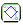
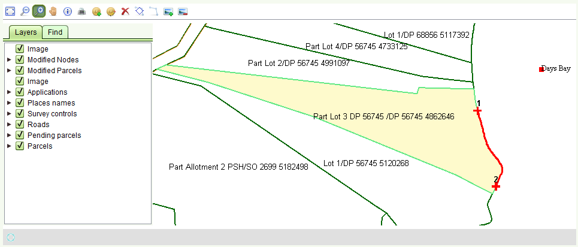
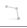
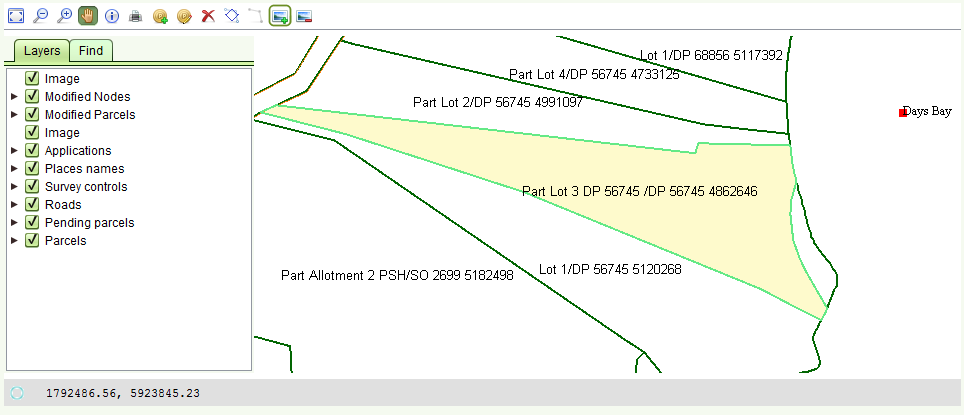
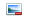

Change Boundary
You can change the entire boundary both of a new parcel (Cadastre Change service) and of existing cadastre objects (Redefine Cadastre service),
in fact the tool is intended for changing an entire boundary for the parcel instead of single points.
Select the boundary to be changed using the Select a boundary to change 
tool, after having zoomed in to the parcels to be changed
- Select a point which is the starting point of the boundary to be changed (can be an existing node or a new added one)
- Select a point (clock wise) which is the ending point of the boundary to be changed (can be an existing node or a new added one)
These points will be shown in the map as green crosses over the boundary
The segment of boundary that will be changed will be shown as a red line between the 1-2

Now select tool Modify Change Boundary 
- Click on the point which is the starting point of the boundary to be changed
- Click on new points which will be part of the new boundary line
- Double Click the point which is the ending point of the boundary to be changed
The new boundary will be shown in light green, leaving the previous one in dark green.
Thus, the new border can be compared to the previous Interested parcels will be set to pending status

You can change the boundary as many times as you want and you can also use the Parcel List to remove a new parcel if you make a mistake while creating it until you finally save
Add Image for Cadastre Change or Redefine Cadastre
You can add a direct image into the map both for Cadastre Change and Redefine Cadastre service using the
 Add direct image tool.
This is meant for small images with the purpose of orientation in the map,
for instance to draw another boundary, not for loading whole satellite images
Add direct image tool.
This is meant for small images with the purpose of orientation in the map,
for instance to draw another boundary, not for loading whole satellite images
- Click to define the bottom-left corner of the image (a green 'X' will appear where you have clicked)
- Click to define the top-right corner of the image (a green 'X' will appear where you have clicked)
- Pick an image (jpg, jpeg, png, tif) from the loaded file dialog chooser (The image will be opened)
- Define the first point in the image by clicking (a green 'X' will appear where you have clicked)
- Define the second point in the image by clicking (a green 'X' will appear where you have clicked))
- Click OK
The image will be displayed in the map directly (it does not need to be geo-referenced)
You can remove the added image using the Remove added image 
There is also a layer in the Layer Tab called "Image" which is used to turn the image on or off.
Also See